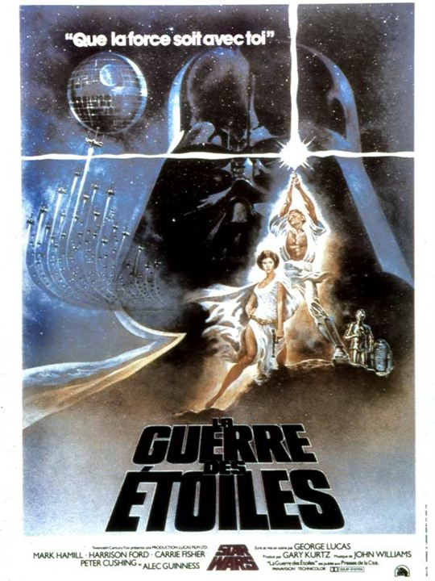
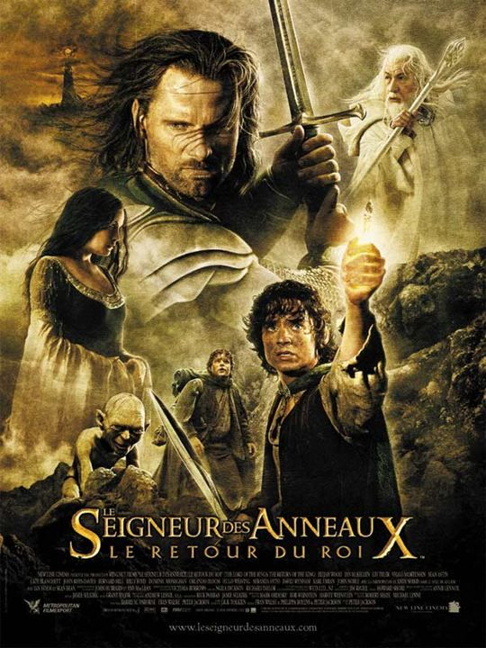
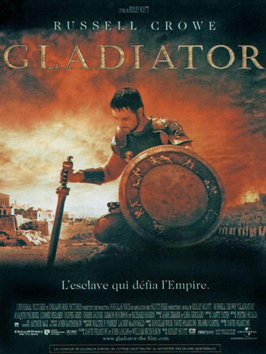

PROJECT PERFORMER

Expert in the programmation world, I build apps whith Ryby on rails. I can work with many many tools.
PROGRAMMING LANGUAGES
| HTML - | CSS - | JS - | RUBY - | SQL - | ACTIVE RECORD |
FAVORITE MOVIES
- Star Wars saga 
- Lord of the rings 
- Gladiator 
Il y a bien longtemps, dans une galaxie très lointaine... La guerre civile fait rage entre l'Empire galactique et l'Alliance rebelle. Capturée par les troupes de choc de l'Empereur menées par le sombre et impitoyable Dark Vador, la princesse Leia Organa dissimule les plans de l'Etoile Noire, une station spatiale invulnérable, à son droïde R2-D2 avec pour mission de les remettre au Jedi Obi-Wan Kenobi. Accompagné de son fidèle compagnon, le droïde de protocole C-3PO, R2-D2 s'échoue sur la planète Tatooine et termine sa quête chez le jeune Luke Skywalker. Rêvant de devenir pilote mais confiné aux travaux de la ferme, ce dernier se lance à la recherche de ce mystérieux Obi-Wan Kenobi, devenu ermite au coeur des montagnes désertiques de Tatooine...
Les armées de Sauron ont attaqué Minas Tirith, la capitale de Gondor. Jamais ce royaume autrefois puissant n'a eu autant besoin de son roi. Mais Aragorn trouvera-t-il en lui la volonté d'accomplir sa destinée ? Tandis que Gandalf s'efforce de soutenir les forces brisées de Gondor, Théoden exhorte les guerriers de Rohan à se joindre au combat. Mais malgré leur courage et leur loyauté, les forces des Hommes ne sont pas de taille à lutter contre les innombrables légions d'ennemis qui s'abattent sur le royaume... Chaque victoire se paye d'immenses sacrifices. Malgré ses pertes, la Communauté se jette dans la bataille pour la vie, ses membres faisant tout pour détourner l'attention de Sauron afin de donner à Frodon une chance d'accomplir sa quête. Voyageant à travers les terres ennemies, ce dernier doit se reposer sur Sam et Gollum, tandis que l'Anneau continue de le tenter...
Jaloux du prestige de Maximus, et plus encore de l'amour que lui voue l'empereur, le fils de MarcAurèle, Commode, s'arroge brutalement le pouvoir, puis ordonne l'arrestation du général et son exécution. Maximus échappe à ses assassins mais ne peut empêcher le massacre de sa famille.